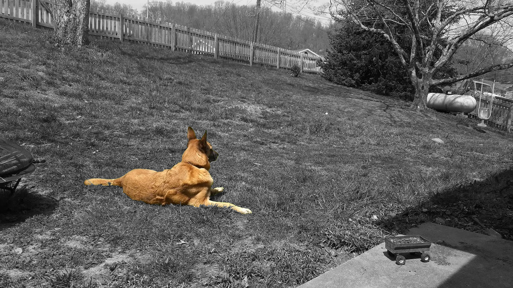

If you have some time, I have a story I'd like to tell you.
It's August 16th, 2016. A typical bright and summer day at home. It was so great that the whole family was outside. Well, everyone except me anyways. I was stuck indoors doing math homework. It's then that my sister comes in my room excited.
"There's a stray dog in our yard, come see!"
Sure enough, there was a fairly large dog in our front yard, and without a collar or harness. But she was surprisingly friendly if she was indeed a stray, as they usually have a waryness around humans. Afterall, mistreatment is usually the cause of their homelessness.
With that said, she was starving. We all could see the outline of her ribs. But we had extra dog food on hand as our neighbor's dog had passed away recently from old age, and they donated the wet dog food they still had left. We opened the can and this poor stray basically inhaled the entire thing. She was very grateful.
So we played fetch with her in the yard. Why not? It's not like we had somewhere to be. And she absolutely adored the exercise and attention. Eventually I got curious what her breed was. She looked kinda like a german shepard but not quite. But I knew how to quickly find out.
Microsoft had a browser tool named "WhatDog" in which you submitted pictures of a dog and the site would (try to) identify it for you. (www.what-dog.net is no longer online) Although I had only used it before to take pictures of other people and see what it would identify them as. Now, I was about to use WhatDog for it's actual purpose, and so I snapped this picture:

This stray turned out to be a belgian malinois, (mal•a•wa) and are one of the most intelligent and hard-working breeds of dogs you can get. Apparently expensive too.
Anyways, my older brother - let's call him Rhett - decided she could use a bath, so he filled up the plastic kiddie pool with the hose. The dog didn't seem to mind, and mostly cooperated through her bath.
We didn't know her name, and just had to keep calling her "girl". We couldn't give her a name either because we couldn't keep her. The reason we couldn’t take her in ourselves was that we already had two dogs who were very territorial. Not that my mom would have been on-board for becoming a home for a large dog. So we were already planning to take her to the animal shelter.
It was at this time my eldest brother, Brad, suddenly pulled up to the street. He had long since moved out on his own, but he was here now for an unannounced visit. He saw the dog and asked where she came from, and commented on how he would love to have a dog like that. Once we told him that she was a stray and we were about to take her to the shelter, he said he would happily take her home with him. Brad had his first, very own dog.
I was quite happy that she wasn’t going to go to the shelter, because if she had, I probably would never have gotten the chance to see her again. But we got to see her the next day as Brad brought her by. He also told us her new name: Millie.
Brad had a friend at the veterinarian's office who looked over Millie. They said she was about 8-10 years old and confirmed to be a purebred belgian malinois. While she needed to gain some weight, she was in good health. Well trained too.
Unfortunately, Brad lived alone. He had no one to look after her while he was gone at work for most of the day. Mals are active dogs that need constant exercise and attention. As much as he wanted for Millie to be his, it soon became clear he was not the best home for her.
Brad was also looking to move to a more affordable home, so he moved back in with us briefly, bringing Millie with him. This time, we made things work out. We were also too attached to Millie at this point to take her to the shelter. While our current dogs, two chihuahuas, were not happy about sharing the home with another dog, they eventually came to accept it. (One more than the other.) When Brad moved out again, Millie stayed with us.
I really can't get over what a great dog she was. Starting from the first day we were really keeping her, she behaved on walks, never messed in the house, was great around little kids, and was even trained to respond to german commands. It's really sad to think someone dumped her to the streets with how well behaved and well trained she was.
Her constant thirst for exercise meant we had to go on more walks so she wouldn't be pacing around the house everyday. Millie loved it when Rhett would take her on long hikes at the park trails. We often went to a large field nearby with a rubber ball and throwing arm. The moment we'd launch the ball, she was sprinting at mach speed after it. She couldn't keep this up as she got older though.
We had 6½ years of the best damn dog the good Lord could send to our front yard. But Millie was getting old. As much as she wanted to get out, she didn't last long on walks and especially not on the hiking trails. It was on March 8th, 2023 that she took a turn for the worst. She started panting a lot and shaking, then refusing her dinner. She wasn't overheating, thirsty, or cold; she was dying. Her body and instincts that drove her to constantly push forward were finally being just supressed by her physical decline, it was being overturned.
Bluntly, Brad explained that a belgian malinois gives everything their 100% until about a week before they die. It was not comforting to hear. It was a shock to us all to think this strong and otherwise healthy dog of ours suddenly had only another week with us. She had trouble propping herself up from a laying position to a standing position, even if it meant meal time or a need for the bathroom. There was soon talk of my parents considering of soon sending her to the vet to put her down. She was in too much pain to continue going.
She ended up making it much longer than we would have expected. Pain pills stuffed inside treats made it easier on her. But as time marched on and she got worse, we couldn't see her suffer anymore. On April 19th, my sister came to me and told me it was time to say goodbye to Millie. I hugged and kissed her stiff fur but she barely reacted. She wasn't completely there anymore, nor did she know what was coming. Brad had the brutal job of taking her to her final resting place. I had unfavorable feelings about him generally - he was a marine with a marine's sense of humor, so we had clashing personalities - but it was only now that I could see his face heartbroken.
Thus, closes the life Millie shared with us.

Thank you Millie for finding us. We'll miss you.